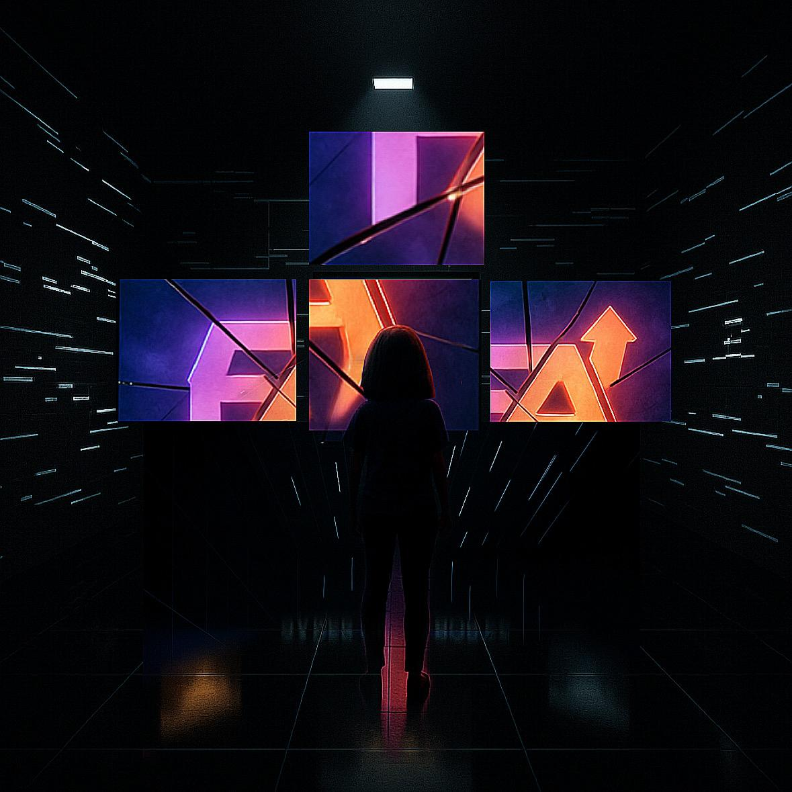
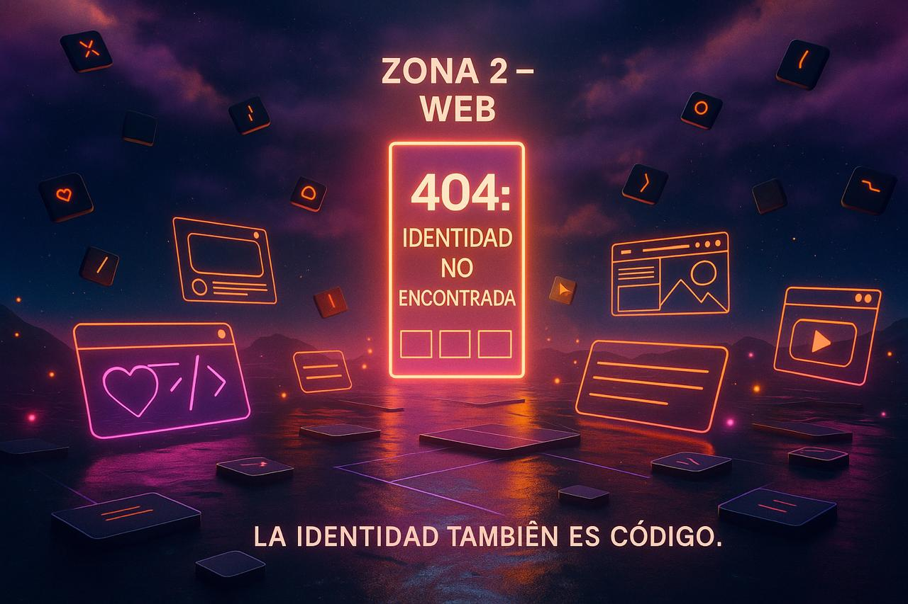
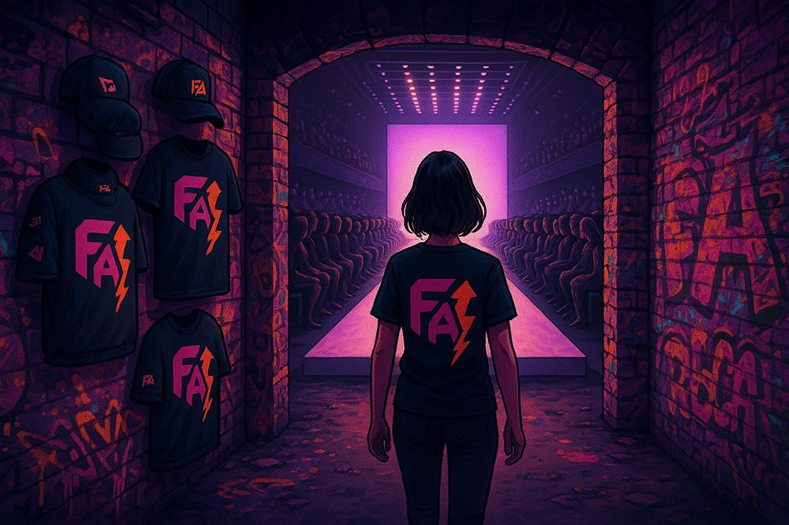

Bienvenidos a FA
FA es un engranaje visual. Y vos sos la chispa que lo activa.
Nada está quieto, pero nada se mueve sin vos.
Cada zona que desbloqueás, cada pieza que encajás, pone en marcha el
sistema.
No venís a buscar quién sos. Venís a activar lo que FA tiene listo
para mostrarte.
Se arma, se conecta, se enciende.
Concepto y Visión
Es un sistema visual que se activa con tus acciones. La identidad se construye paso a paso, con cada pieza que encajás correctamente. Un recorrido guiado donde cada movimiento desbloquea el siguiente nivel. Cada zona que se activa, cada pieza que encajás, pone en movimiento una parte. Y al final, la suma de esas acciones hace girar el sistema → como un engranaje completo funcionando.
Primer Contacto
El usuario recibe una caja física intervenida a mano con recortes, acrílico y stickers. Al abrirla, encuentra una carta: "FA está en pausa. Vos sos la señal".
Contenido de la caja:
- Taza FA con frase oculta.
- Saquito de té: "Esto no es un break, es un boot."
- CD de acceso: "Acceso concedido. Usuario FA_xx1"
- Vela artesanal: "Prendé. Encendé FA."
- Stickers con frases como "Estás dentro."
EXPERIENCIA.ZONAS
El corazón de la experiencia. Tres desafíos para activar el sistema.
ZONA 1
Sala rectangular, cerrada, estilo caja negra. Tamaño: Mediana. Suficiente para caminar un poco, pero que se vea todo de un vistazo. Piso: Negro, con reflejos o una textura ligeramente espejada. Como con un material con specular alto para simular brillo(sin tener que meter reflejos reales). Paredes: Planas, oscuras (gris profundo o negro) Luz: Un único foco de luz blanca desde arriba, apuntando al centro. El resto es tenue, con algo de luz ambiente azul o violeta muy baja. En el centro se encuentran pantallas rotas. 4 pantallas rotas muestran loops visuales, mini clips o imagenes. Como un storyboard roto El objetivo, el Usuario debe: * Reordenar pantallas para generar una animación fluida. * Cuando lo logra, se forma una animación breve que representa el servicio video,motion de la agencia Aparece la cámara FA (objeto) que se llevara el Usuario para pasar a la zona 2 y se desbloquea una frase: “Solo cuando todo encaja, la historia se mueve.” Acompañado con techno glitch El usuario se lleva objeto desbloqueado para pasar a la zona 2
ZONA 2
Un mundo digital fragmentado. Códigos flotan en el aire, teclas de teclado giran, y una pantalla gigante dice: “404: Identidad no encontrada.” El usuario debe: * Reconectar partes de una interfaz web arrastrando elementos visuales (botones, íconos, menú). * En pantalla hay un diseño de web roto (una maqueta con espacios vacíos tipo wireframe o grilla). * Tiene que arrastrar y soltar cada pieza en su lugar correcto. * Cuando están todos bien colocados, se reconstruye la web, se prende la pantalla gigante con la animación web FA Termina con la frase “La identidad también es código” Todo el espacio acompañado de musica intelligent dance music El usuario se llevara con el el segundo objeto que desbloqueara la zona 3 para ingresar
ZONA 3
Un mundo digital fragmentado. Códigos flotan en el aire, teclas de teclado giran, y una pantalla gigante dice: “404: Identidad no encontrada.” El usuario debe: * Reconectar partes de una interfaz web arrastrando elementos visuales (botones, íconos, menú). * En pantalla hay un diseño de web roto (una maqueta con espacios vacíos tipo wireframe o grilla). * Tiene que arrastrar y soltar cada pieza en su lugar correcto. * Cuando están todos bien colocados, se reconstruye la web, se prende la pantalla gigante con la animación web FA Termina con la frase “La identidad también es código” Todo el espacio acompañado de musica intelligent dance music El usuario se llevara con el el segundo objeto que desbloqueara la zona 3 para ingresar
La Experiencia
Un recorrido desde el inicio hasta la revelación final.
INICIO Y DESPERTAR
El juego comienza en un entorno abstracto: una sala vacía, envuelta en niebla blanca con un leve ruido ambiente. En el centro flota un texto: “Identidad cargando… sistema esperando señal” Una luz tenue apunta al usuario. Al caminar hacia ella, el suelo se enciende con colores FA (rosa, violetas, naranjas, blanco). La niebla se disipa y aparece frente a él el mundo de FA: un espacio 3D geométrico, saturado de collages, texturas intensas, 3D, luces y pantallas flotantes.
EXPLORACIÓN
El usuario avanza de una zona a la otra. Al completar una zona,
el jugador recoge un objeto, que reactiva e ilumina un nuevo
camino
* Entra por la Zona 1, termina el desafío, se abre un
túnel/pasarela y automáticamente avanza a la siguiente zona, sin
volver al centro.
* Cuando termina las 3 zonas, recién ahí vuelve al centro, ahora
transformado, con todos los objetos girando a su alrededor (como
si lo que recorrió hubiera sido una proyección desde ahí)
SALA FINAL
Una vez recolectados los 3 objetos, el usuario es transportado a
una sala circular. Todo lo que construyó se muestra animado:
*Las frases flotan a su alrededor.
* Los objetos aparecen
suspendidos y giran en un loop. En el centro, una pantalla en
blanco espera… Identidad cargada, sistema listo para mostrarse
Frase final proyectada: FA: Lo que fuiste viendo ya estaba en
vos
Universo Visual
La estética de FA es una mezcla de collage, texturas intensas, 3D, luces de neón y elementos geométricos. Cada rincón está diseñado para ser una experiencia visual única e inmersiva, donde la identidad de la marca se siente en cada pixel.